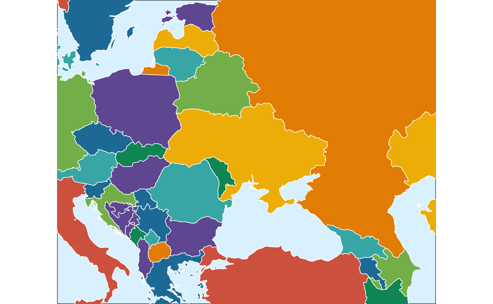
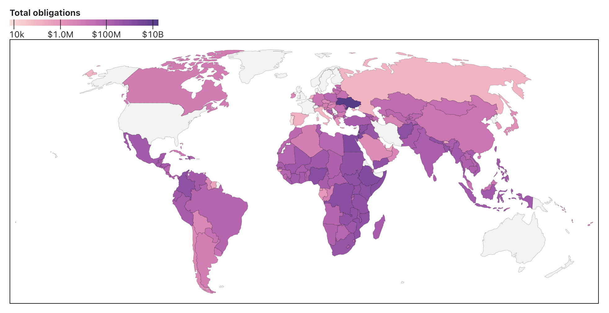

2025
How to open a folder as a Positron project with macOS Quick Actions
Add a Quick Action workflow so that you can right click on a folder in Finder to open it in Positron.

How to use a histogram as a legend in {ggplot2}
Land isn't unemployed—people are. Here's how to use R, {ggplot2}, {sf}, and {patchwork} to create a histogram legend in a choropleth map to better see the distribution of values.

How to move Crimea from Russia to Ukraine in maps with R
Natural Earth's de facto on-the-ground policy conflicts with de jure boundaries. Use {sf} and R to relocate parts of country shapes.

Using USAID data to make fancy world maps with Observable Plot
Manipulate geographic data, change projections, get live data from a database, and make interactive plots with Observable JS

Guide to comparing sample and population proportions with CPS data, both classically and Bayesianly
Download CPS demographic data from IPUMS and use R and {brms} to calculate differences between sample and national proportions with Bayesian ROPE-based inference